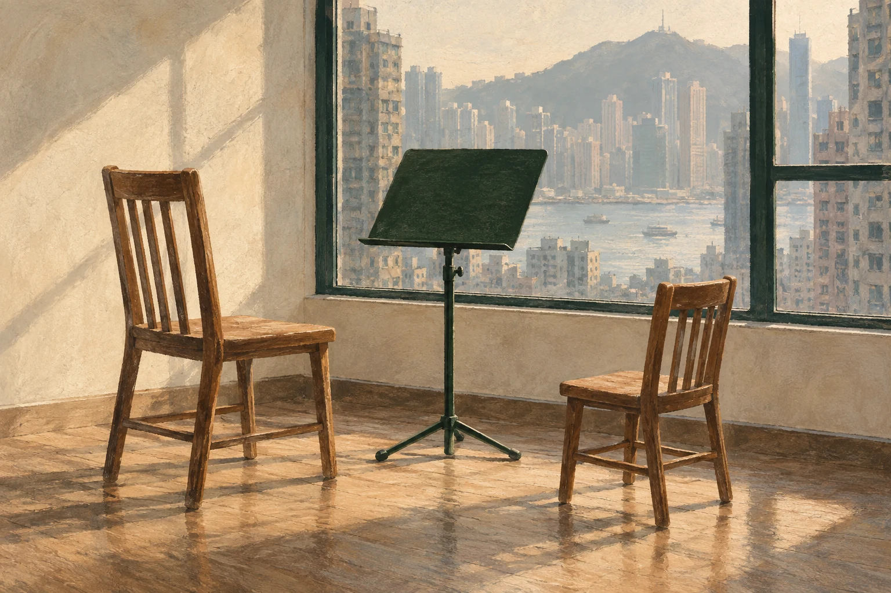
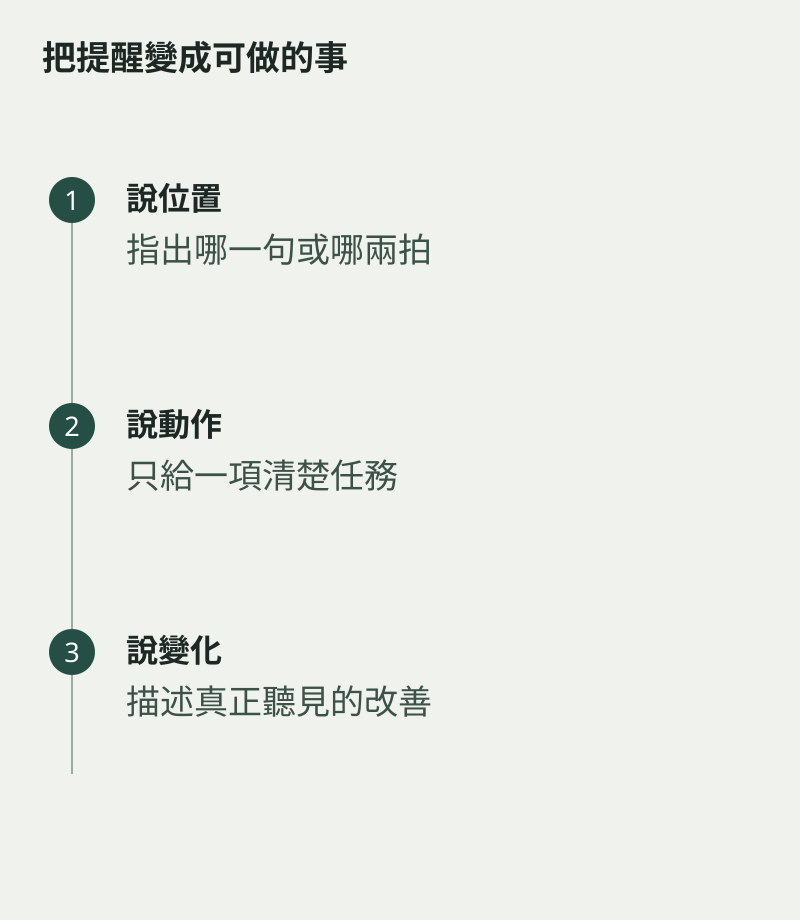

孩子同一處反覆吹錯，家長很容易脫口而出「又錯了」。這句話指出結果，卻沒有告訴孩子下一步怎樣做。可以把語句縮小到一個位置和一個動作，例如「我們只拍這兩拍」，讓練習重新變得可處理。
陪練不需要家長變成第二位老師。先按課堂留下的要求協助，拿不準的技巧記下來，交回老師判斷，避免孩子在兩套指令之間來回。
描述你聽到的事
「這次第二句比剛才快」比「你沒有專心」更容易比較；「末音吹足了」也比一句「好叻」更能讓孩子知道哪個做法值得保留。具體描述，不需要每次都變成評論。
一次只給一項提醒。剛說完坐直，又要求手指、嘴形、拍子全部改，孩子可能只剩忙亂。先與老師確認當週最重要的一兩件事，家中便有共同標準。

練習快變爭執時先停
情緒已經升高，繼續重複同一句通常不會讓聲音更清楚。可以休息一下，或改成聆聽與拍節奏，稍後再處理。若衝突經常發生，與老師一起調整任務和陪練方式。
家長能提供的支持，有時只是把譜架放好、聽完一段、記住孩子今天做到的一件小事。語言少一點，方向清楚一點，練習便較容易保留彼此願意合作的空間。